Small Forward
(all of the information is taken from wikipedia.org)
The small forward (SF), also known as the three, is considered to be the most versatile of the main five basketball positions. Versatility is key for small forwards due to the nature of their role, which resembles that of a shooting guard more often than that of a power forward. This is why the small forward and shooting guard positions are often used interchangeably and referred to as wings. This position is like the "swiss army knife" because they can do just about everything, from scoring, rebounding, handling the ball, passing, and the ability to defend, if they are a skilled small forward.[3]
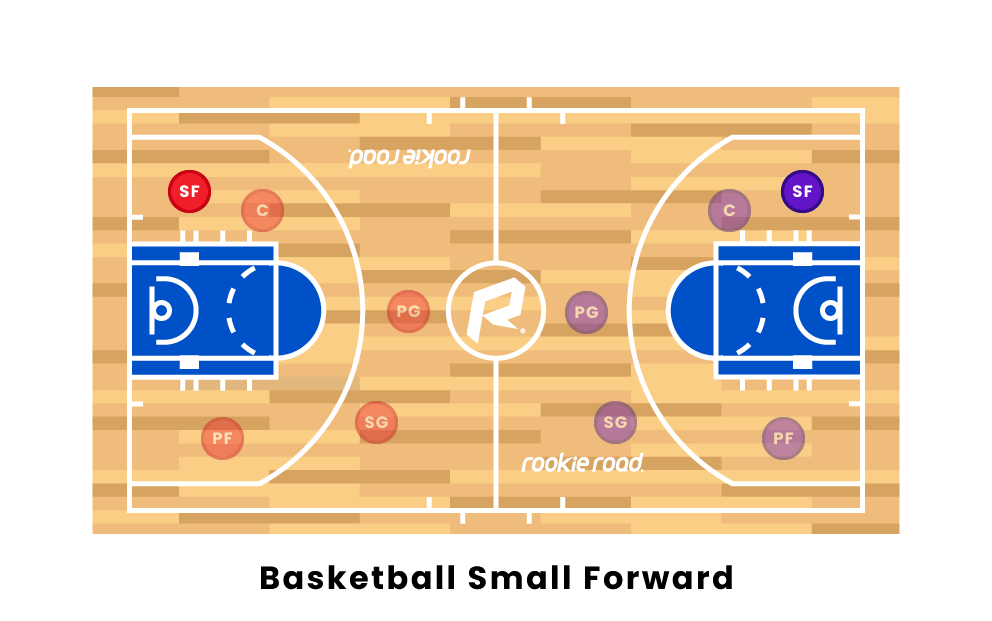
Small forwards have a variety of assets, such as quickness and strength inside. A common thread among small forwards is an ability to "get to the line" and draw fouls by aggressively attempting (posting-up) plays, layups, or slam dunks. As such, accurate foul shooting is also a common skill for small forwards, many of whom record a large portion of their points from the foul line. Besides being able to drive to the basket, they are also good shooters from long range. They are the second-best 3-point shooters on the court along with the shooting guard and usually when remaining stationary, they linger just inside the 3-point line. Some small forwards have good passing skills, allowing them to assume point guard responsibilities as point forwards. Small forwards should be able to do a little bit of everything on the court, typically playing roles such as swing men and defensive specialists. A small forward under 6 feet 5 inches (1.96 m) might play the shooting guard position some of the time while a small forward taller than 6 feet 7 inches (2.01 m) might play power forward some of the time. In the NBA, small forwards usually range from 6 feet 4 inches (1.93 m) to 6 feet 9 inches (2.06 m). Some of the greatest players to ever play at the small forward spot are Larry Bird, LeBron James, and Michael Jordan. These 3 are usually regarded as the top 3 best players to ever play at the small forward spot.[10]
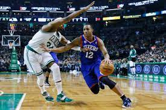
Tier List of All-time PG
Add Card
S
A
B
C
D
F
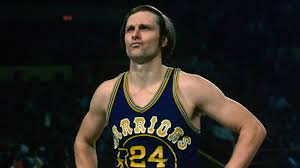
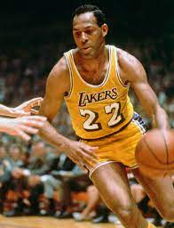
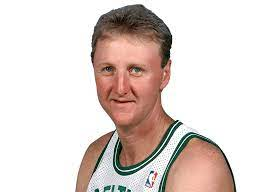
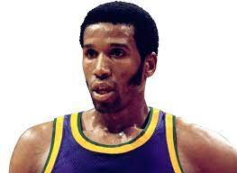
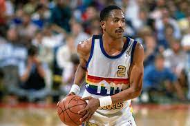
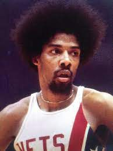

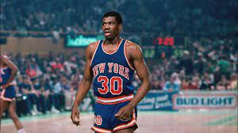
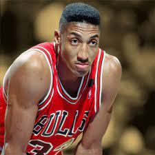
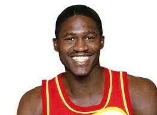
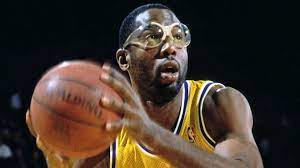